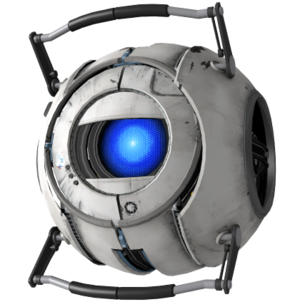

Wheatley

Background
Wheatley is a personality core and one of the main characters in Portal 2. He is designed to be a "moron" core, intended to be less intelligent than other cores. Wheatley is initially helpful to the player character, Chell, guiding her through the Aperture Science facility. However, his incompetence and desire for power lead to significant consequences later in the game.
Appearances
- Portal 2 (2011)
Abilities
Wheatley's abilities are limited due to his design as a moron core. He can interact with the environment and provide guidance, but he lacks the intelligence and problem-solving skills of other characters. Despite this, he plays a crucial role in the game's narrative and has a significant impact on the story's progression.
Personality
Wheatley is characterized by his bumbling nature, comedic timing, and desire for recognition. He often makes mistakes and misjudgments, leading to humorous situations. However, his ambition and desire for power ultimately drive him to make poor decisions that affect both himself and others.